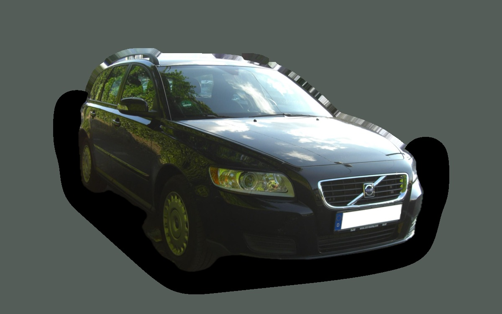

Vad kostar en Volvo V50 per månad?
En Volvo V50 från 2009 kostar cirka 3 173 kr i månaden, allt inräknat.
3 173 krper månad, årsmodell 2009
32 000 krpris, årsmodell 2009
242 900 krsenaste nypris
Dprisvärdhetsbetyg (2009)


Månadskostnad per årsmodell
| Årsmodell | Version i beräkningen | Pris | Per månad | Betyg |
|---|---|---|---|---|
| 2012 | 1.8 125, Kinetic | 44 000 kr | 3 307 kr | D |
| 2009 | 1.8 125, Kinetic | 32 000 kr | 3 173 kr | D |
| 2006 | 1.8 125, Kinetic | 23 000 kr | 3 046 kr | D |
Räknat på 5 års ägande och 1 250 mil per år, med bränslepriser från 2026-10-22. Månadskostnaden innehåller värdeminskning, drivmedel, service och reparationer, försäkring och fordonsskatt.
Så fördelas kostnaden för en 2009:a
- Värdeminskning: 217 kr/mån
- Drivmedel: 1 626 kr/mån
- Service och reparationer: 1 024 kr/mån
- Försäkring: 165 kr/mån
- Fordonsskatt: 141 kr/mån
Begagnatpriser i annonser
| Årsmodell | Medianpris | Annonser | Typiskt miltal |
|---|---|---|---|
| 2012 | 54 900 kr | 77 | 21 100 mil |
| 2011 | 42 500 kr | 92 | 22 500 mil |
| 2010 | 35 000 kr | 72 | 22 800 mil |
| 2009 | 28 000 kr | 74 | 24 000 mil |
| 2008 | 30 000 kr | 64 | 26 000 mil |
| 2007 | 29 000 kr | 44 | 23 400 mil |
| 2006 | 24 900 kr | 31 | 26 000 mil |
| 2005 | 25 000 kr | 24 | 25 400 mil |
Medianpriset i svenska annonser per årsmodell i oktober 2026 (källa: Blocket). Annonspriser är utgångspriser, och slutpriset kan bli lägre.
Motorer och versioner
| Motor | Drivmedel | Effekt | 0–100 km/h | Förbrukning (WLTP) | Räckvidd | Årsmodeller | Pristillägg |
|---|---|---|---|---|---|---|---|
| 1.8 125 | Bensin | 125 hk | 10,8 s | 7,4 l/100 km | – | 2005–2012 | – |
| 2.0D 136 | Diesel | 136 hk | 9,9 s | 5,9 l/100 km | – | 2005–2012 | +15 000 kr |
| T5 230 | Bensin | 230 hk | 6,9 s | 9 l/100 km | – | 2005–2012 | +49 900 kr |
- Utrustning: Kinetic, Summum (+24 900 kr)
Fakta
- Kaross
- Kombi
- Årsmodeller
- 2005–2012
- Senaste nypris
- 242 900 kr
- Bagage
- 417 liter
- Euro NCAP
- 5 av 5 stjärnor
- Nybilsgaranti
- 3 år
- Driftsäkerhet
- 3 av 5
- Helförsäkring, uppskattning
- 5 400 kr/år
- Service, uppskattning
- 3 800 kr/år
Vanliga fel att ha koll på
- Partikelfilter och turbo (2,0-diesel), reparation cirka 9 000 kr
- Automatlådan (AW55) slirar och rycker, reparation cirka 20 000 kr
- Kamrem och spännare (motorskada om den brister), reparation cirka 8 000 kr
- Vevhusventilation (PCV) sätts igen, reparation cirka 6 000 kr
Felen gäller vissa motorer och årsmodeller. I kalkylatorn räknas risken för just den version du väljer.
Fördelar och nackdelar
Fördel
Smidig och billig kombi med bra säkerhet.
Nackdel
Litet bagage för en kombi.
Liknande bilar
 Toyota Corolla Touring Sports3 169 kr/mån som 2023:a
Toyota Corolla Touring Sports3 169 kr/mån som 2023:a Dacia Jogger3 210 kr/mån som 2023:a
Dacia Jogger3 210 kr/mån som 2023:a Hyundai i30 Kombi3 104 kr/mån som 2022:a
Hyundai i30 Kombi3 104 kr/mån som 2022:a Skoda Octavia Kombi III3 072 kr/mån som 2017:a
Skoda Octavia Kombi III3 072 kr/mån som 2017:a Ford Mondeo Kombi3 059 kr/mån som 2019:a
Ford Mondeo Kombi3 059 kr/mån som 2019:a- Bild saknasToyota Avensis Touring Sports3 050 kr/mån som 2015:a
Uppdaterad 2026-10-26 · annonsdata okt 2026